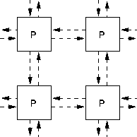

Next: Parallel Programs
Up: Introduction to Parallel Processing
Previous: Parallel Processing
Processors can be interconnected in a number of ways:

Data is distributed (or `overlaid') onto the processor grids.
For more information, click here

Next: Parallel Programs
Up: Introduction to Parallel Processing
Previous: Parallel Processing
Adam Marshall ©University of Liverpool, 1996
Tue Nov 26 19:51:50 GMT 1996